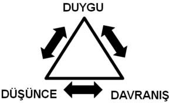

Özgürlük için savaşırız hayat boyu! Hep başkalarının özgürlüğümüzü elimizden almaması için mücadele ederiz. Ama çok ucuza da satıveririz özgürlüğümüzü. Kendi elimizle özgürlüğümüzü satmaktır bağımlılık!
Bu bölüm interneti takıntılı, sorunlu, patolojik kullananlar veya internet bağımlıları içindir. Adını ne koyarsanız koyun, internet ve bilgisayarla bir sorununuz olduğunu düşünüyorsanız, bir önyargıya kapılmadan bu bölümü okuyun.
Genellikle "ben bunları yaptım, işe yaramadı" denir. Ama sorun bunların hepsini bir arada uygulamaya koyabilmektedir. Tek tek uygulamaya konulan önlemler ve yöntemler genelde internetin gücü karşısında yenilmeye mahkûm olurlar. Sorunun üstüne topyekûn yöntemlerle gitmek başarıyı getirecektir.
İnternet bağımlılığıyla mücadele etmek ciddi bir iştir. Ama mücadele edenler için mücadelede başarılı olma oranı da oldukça yüksektir. Sadece basit olmak ve kurallara uymak gereklidir. Aşağıda yapmanız gerekenlerin bir listesi verilmiştir. Açıklamalarını da aşağıda bulacaksınız.
1. Durumunuzu değerlendirin.
2. Zamanı iyi yönetin.
3. Kendinizi kandırmayın.
4. Kendinize iyi davranın.
5. Olumsuz pekiştireçler kullanın.
6. Düşüncelerinizi değiştirin.
7. Günlük tutun.
8. Duygu-düşünce-davranış döngüsünü kontrol edin.
9. Zihninizdeki imgeleri değiştirin.
10. Unutmayın.
11. Duygularınızı keşfedin ve kontrol edin.
12. Gerçek ile sanalı bütünleştirin.
13. Ne istediğinizi bilin.
14. İyileştiğinize ilişkin işaretleri takip edin.
Durumunuzu Değerlendirin
"Bir Dakika Daha" Sendromu
Bu deneyim, partide sevdiği birine (veya kendi kendine) "sadece bir içki daha" diyen bir alkol bağımlısının, yatmadan önce "sadece bir sigara daha" diyen bir sigara bağımlısının veya kumarhaneden çıkmadan önce "sadece bir oyun daha" diyen bir kumar bağımlısının cevabıyla kıyaslanabilir. Sevdiklerinizin bilgisayarı kapatma uyarısını dikkate almanız gerektiğini, uyumanız gereken saatin çoktan geçtiğini veya yapmanız gereken başka işler olduğunu bilirsiniz, yine de "sadece bir dakika daha" orada olmanın aslında çok daha büyük bir fark yaratmayacağı fikrini meşrulaştırmaya çalışırsınız.
Çok Ne Kadardır?
Normal veya kabul edilebilir internet kullanımını bağımlılık yaratan bir alışkanlıktan ayıran kesin bir ayrım yoktur. Bir bağımlılığı asla sadece nicelikle tanımlayamazsınız. Bu alışkanlığın hayatta neden olduğu sorunlar daha doğru bir bağımlılık ölçütü oluşturur.
Alkolle ilgili, keyfi olarak 10 biraya onay verip, 11 veya daha fazlasının sizi bağımlılığa götüreceğini söyleyemezsiniz. Buna benzer bir şekilde, haftada 10 saatin iyi olduğunu ama 11'inci saatin sizi internet bağımlısı yapacağını size kimse söyleyemez.
Kendini Değerlendirme
Şimdi aşağıdaki maddeleri okuyun, kendinize ne kadar uyduğunu tespit etmeye çalışın ve sizde var olduğunu düşündüklerinizi işaretleyin.
1. Bilgisayarda geçirilen zamanı kısıtlamaya veya bilgisayar kullanımına son vermeye çalışırken yaşanan "kontrolü yitirme" duygusu (kendine ve diğerlerine verilen sözlerin tutulmaması; bırakmaya söz verme ama gerçekleştirememe).
2. Bilgisayarda geçirilen zamanla ilgili kendine veya başkalarına karşı dürüst olmama ya da yapılan aktivitelerle ilgili yalan söyleme.
3. Bilgisayarda geçirilen zaman yüzünden kullanıcının kendi yaşamıyla ilgili ya da ailesi veya arkadaşlarıyla olumsuz deneyimler yaşaması.
4. Bilgisayar kullanırken yüksek riskli veya normalde kabul edilemeyecek davranışlarda bulunma. Bilgisayarın sağladığı anonimlik ve güvenlikten faydalanarak ahlaki değerlerden ödün verme. (Bunu anlamanın en iyi yolu eşinize veya ailenize bilgisayarda yaptığınız şeyi onaylayıp onaylamayacağını sormaktır.)
5. Bilgisayarın kişinin hayatında çok önemli bir yeri olduğu duygusu. Hayatınızdaki insanlar kendilerini ihmal edilmiş ve dışarıda bırakılmış hissetmesine rağmen, bilgisayarı istediğiniz kadar kullanma hakkınızı savunma. (Sorunu yok saymak ve kendini haklı çıkarmaya çalışmak, diğer insanların bilgisayarla ilgili davranışınız hakkında söylediklerine duyarsız kalmak.)
6. Bilgisayarda geçirdiğiniz sürenin aşırı olması veya gerçekleştirdiğiniz anormal davranışlardan ötürü suçlulukla karışık haz duygusu.
7. Herhangi bir şey veya biri bilgisayarda geçireceğiniz sürenin kısalmasına neden olduğunda depresyon ve kaygı hissetme.
8. Bilgisayar kullanmadığı zamanlarda kişinin zihninin bilgisayar veya bilgisayarla ilgili aktivitelerle aşırı meşgul olması. (Başka bir şey yaparken, örneğin aile yemeğinde, proje yetiştirmeye çalışırken bilgisayar ve bilgisayarla ilgili aktiviteleri düşünme.)
9. Mutsuz veya sıkıntılı anlarınızda kendinizi bilgisayarın başında bulma (ilişkinizle ilgili kendinizi rahatsız hissettiğinizde, kendi kendinizi iyileştirmek veya "kaçmak" için bilgisayar kullanma). Bilgisayardaki vakti, hayatınızda olan bitenlerle yüzleşmekten veya gerçekten hissettiğiniz duyguları anlamaktan kaçınmak için kendinizin dışında bir şeye odaklanma (kendi kendini iyileştirme).
10. Bilgisayar donanımına, çevrimiçi ücretlere veya bilgisayarla ilgili herhangi bir şeye harcanan paradan dolayı finansal sorunlar yaşama (normal hayat giderlerine harcanması gereken paranın bilgisayarla ilgili giderlere harcanması).
Eğer yukarıdaki maddelerden sadece birine evet dediyseniz, bilgisayar bağımlılığıyla ilgili bir sorun yaşıyor olabilirsiniz. Eğer iki tanesine evet dediyseniz, bilgisayar bağımlılığıyla ilgili bir sorun yaşama ihtimaliniz oldukça yüksektir. Üç veya daha fazlasına evet dediyseniz, bilgisayar ya da bilgisayardaki aktivitelere bağımlı olduğunuz anlamına gelen bir davranış örüntüsü sergiliyorsunuz demektir.
Kendinizi Test Edin
Daha bitmedi! 191. sayfadaki formu (Bağımlılık Profil İndeksi İnternet Bağımlılığı Formu -BAPİNT) doldurarak internet bağımlısı olup olmadığınızı anlayabilirsiniz. Önce BAPİNT'i doldurun.
Bağımlılık Uyarı Sinyalleri
En önemli on bağımlılık uyarı sinyali aşağıdaki gibidir (Ekinci, 2002):
1. Yalnızca birkaç dakika harcamaya niyetli olduğunuz halde, bilgi aramak için saatler harcadığınızı fark ediyorsunuz.
2. Çalışma arkadaşlarınıza, özel hayatınızdaki arkadaşlarınıza veya eşinize bilgisayar başında geçirdiğiniz zaman hakkında yalan söylüyorsunuz.
3. Monitörün başında her oturuşta saatlerce kaldığınız için fiziksel sorunlardan mustaripsiniz.
4. Sürekli olarak bir sonraki internet oturumunu iple çekiyorsunuz.
5. Aradığınız bilgiyi bulmaya hep "bir adımcık" kaldığını düşünüyorsunuz.
6. Anonim bir kişiliğe bürünmek size heyecan veriyor, insanlarla internet üzerinden konuşmayı yüz yüze konuşmaktan daha kolay buluyorsunuz.
7. Elektronik postanızda bir şey var mı diye bakmak için zorlayıcı bir istek duyuyorsunuz.
8. İnternete girmek için yemek öğünlerinize, derslerinize veya randevularınıza boş veriyorsunuz.
9. Bilgisayarınızın başında çok fazla zaman geçirdiğiniz için suçluluk duyma ile büyük bir zevk alma arasında gidip geliyorsunuz.
10. Bilgisayarınızdan uzak kaldığınız zaman canınız bilgisayar çekiyor ve yoksunluk belirtileri gösteriyorsunuz.
Zamanı İyi Yönetin
Çevrimiçi olduğunuz zamanı ayarlamak için çeşitli yollar deneyebilirsiniz. Ben size bu amaca ulaşmak için dört farklı yöntemi ana hatlarıyla özetleyeceğim.
Alternatif Bir Aktivite Geliştirin
Her zaman denemek istediğiniz bir hobiniz varsa, şimdi bu hobiye başlamak için en uygun zaman olabilir. Spor salonuna gitmeyi düşündüyseniz, bunu hemen yapın. Belki uzun zamandır görüşmediğiniz bir arkadaşınızı hatırladınız, ona hemen ulaşın ve birlikte neler yapmak isteyebileceğinizi görün. Bunu hoşunuza giden bir şey haline getirin. Hayatınızda ne kadar keyifli aktivite olursa, kafanızdaki o daimi internet uğultusunu o kadar az özlersiniz ve o güçlü isteğe o kadar az teslim olursunuz.
İnternette daha fazla zaman geçirmek için neleri yapmaktan vazgeçtiğinizi bir kâğıda yazın. Sinemaya gitmek, arkadaşlarla buluşmak, bisiklete binmek için daha az zaman harcıyor olabilirsiniz. Uzun zamandır yapmayı planladığınız ama ertelediğiniz aktiviteleri de yazın. Sonra bunları bir sıraya koyarak gerçekleştirmeye çalışın.
İnternet Kullanma Düzeninizi Belirleyin ve Tam Tersini Uygulayın
Mevcut internet kullanımı alışkanlığınızı gözden geçirmek için birkaç dakikanızı harcayın. Haftanın hangi günleri internete bağlanıyorsunuz? Normal bir oturum kaç saatinizi alıyor? Bilgisayarı genelde nerelerde kullanıyorsunuz?
Alışkanlığınızı terk etmek için tam tersini uygulayın. Diyelim ki internet alışkanlığınız sabah ilk iş olarak e-postalarınızı kontrol etmeyi içeriyor, siz, uyanır uyanmaz duşa girmeyi ve kahvaltı etmeyi deneyin.
İnterneti sadece geceleri kullanıyorsanız ve yatma zamanını oldukça geçiriyorsanız, interneti sadece gündüz kullanmayı deneyin. Akşam yemeğinden önce bilgisayarı açıyorsanız, yemekten sonra açmayı deneyin. Hafta içi her akşam bilgisayarı açıyorsanız, hafta sonuna kadar bekleyin.
Tüm hafta kullanıyorsanız, bunu sadece hafta sonlarıyla sınırlandırın. Hiç ara vermiyorsanız, her yarım saatte en az bir ara verin. Internet kullanımınız gazete okumakla başladıysa, gazetenin basılmış halini satın alın ve okuyun. Bilgisayarı küçük odada kullanıyorsanız, yatak odasına taşıyın.
Bu çalışmanın amacı rutinleri değiştirmek ve bağlantı alışkanlıklarını yıkmak adına yeni kullanım örüntüleri geliştirmektir.
Sizi Durduracak Dışsal Uyaranlar Bulun
Yapmanız gereken somut işleri ve gitmeniz gereken yerleri size oturumu kapatmanızı hatırlatan araçlar gibi kullanın, çevrimiçi olduğunuz zamanı hemen o işlerden önceye programlayın. İşe 7.30'da gidiyorsanız, internete 6.30'da bağlanın ve kendinize bırakmak için tam bir saatiniz olduğunu hatırlatın.
Veya diyelim ki salı günü akşam 20.00'de seramik dersiniz var. O akşam 18.30'da internete bağlanın ve derse gitmek için evden çıkmanız gereken zamana kadar internette kalın. Cumartesi saat 12.30'da arkadaşınızla yemeğe gidecekseniz, 10.30'da internete bağlanın ve kendinize randevunuzdan önce iki saat internette kalma izni verin.
Tabii ki, bu gibi doğal uyaranları göz ardı etmeniz gibi bir tehlike var. Eğer öyleyse, oturumu sonlandıracağınız zamanı tespit edin ve saatinizin alarmını kurun. Saati bilgisayardan bir kaç adım uzak tutun ki, kapatmak için kalkmanız gereksin.
Haftalık Programınıza İnternette Kalacağınız Zamanı da Dahil Edin
İnternet kullanımını sınırlama girişimleri başarısız olur, çünkü kullanıcı genelde çevrimiçi olma saatlerinin belirlenmediği muğlak bir plana itimat eder. Ben farklı bir yaklaşım öneriyorum. Makul bir hedef belirleyin, belki de şimdiki haftada 40 saatin yerine 20 saatlik bir program. Daha sonra bu 20 saati belirli zaman dilimlerine programlayın ve takviminize veya ajandanıza yazın.
Oturumları kısa ama yaygın bir şekilde programlayın. Bu internete bağlanma arzusunu ve yoksunluğu önlerken, düzenli iki saatlik kullanımlar da zaman tuzağına düşmenizi engelleyecektir. 20 saatlik bir programa örnek olarak, her akşam 20.00-22.00, cumartesi ve pazar 13.00-18.00 saatleri arasında internet kullanmayı planlayabilirsiniz. Veya 10 saatlik bir programda hafta içi iki gün 19.30'dan 22.30'a kadar, hafta sonu da 8.30 ile 12.30 saatleri arasında internete bağlanabilirsiniz.
"Belli bir zaman aralığında bir gün" ilkesi, alkol ve uyuşturucu bağımlılarının 12 adımlık iyileşme programlarında sıkça kullanılan bir yöntemdir. Bunda amaç kaçınma davranışının gerçekleştirmektir. İnternet bağımlılığında buna benzer ilke, internet kullanımınızı belirli ve kısıtlı bir zamanla sınırlandırmanız anlamına gelen, "günde bir zaman aralığı" ilkesi olabilir. İnternet kullanımınızı somut bir programa dahil etmek, internetin sizi kontrol etmesi yerine sizin onu kontrol ettiğinizi hissettirecektir.
Anlamlı Boş Zaman Aktiviteleri Geliştirin
İnsanlar genelde sıkıldıkları için internete bağlanır. Veya e-postalarını kontrol etmek ya da bilgi aramak için bilgisayarın başına geçerler ve nasıl olduğunu anlamaksızın iki saatlerini harcarlar.
"İnternet bağımlısı" ise tüm boş zamanını internette geçirir. Takıntısı doruk noktasına ulaştığında ise, çalışma veya uyku zamanlarını da internette geçirmeye başlar.
Herkes için anlamlı boş zaman aktivitelerine sahip olmak önemlidir ama internet bağımlısı için onu çevrimiçi sanal aktivitelerden uzak tutacak boş zaman aktiviteleri özellikle önemlidir.
Tüm boş zamanınızı üretken, eğlenceli veya eğitsel aktivitelerin doldurduğu bir program yapın.
Başka bir takıntının internetin yerini almamasını sağlamak için bu aktivitelerin çeşitli olmasına dikkat edin.
Takıntılı davranışınızı gerçekleştirmek için yoğun bir istek duyduğunuzda veya daha önceden bilmediğiniz bir boş zamanınız olduğunda gerçekleştireceğiniz bir "B planı" ve böyle anlarda iletişim kuracağınız insanların bir listesini hazırlayın.
Bazı örnekler: Pazartesi ve salı günleri okumak ve evi temizlemek; salı ve cumartesi günleri sinemaya gitmek; çarşamba ve pazar günleri eşler birlikte yeni bir yemek denemek; cuma günleri de aile ziyareti yapmak.
Çeşitli aktivitelerle meşgul olmanız, birçok açıdan işe yarar:
• Tabii ki, çevrimiçi olabileceğiniz zamanı azaltır.
• Çevrimiçi aktiviteler (kumar oynamak, alışveriş yapmak, sanal seks yapmak vb.) olmaksızın da yaşayabileceğiniz inancını pekiştirerek duygusal rahatlama sağlar.
• Bilgisayarla ilgili takıntılarınız kendini hissettirmeye başladıklarında, onları harekete geçmekten alıkoyacak seçeneklerin olduğunu bilmenizi sağlar.
• Seçtiğiniz aktivitelere bağlı olarak, yeni ve sağlıklı insanlarla tanışmanızı ve anlamlı ilişkiler kurmanızı sağlar.
• Aktivitelere bağlı olarak, başarı duygusu sağlayarak kendinize olan güveninizi kazanmanızı sağlar.
Kendinizi Kandırmayın
Siz çevrimiçi olduğunuz saatleri saymasanız da, eşiniz ve aileniz sayıyor. Alışkanlıklarınızın değiştiğini fark ediyorlar. Sizin sabah ilk iş olarak, sersem sepelek bir halde e-postalarınızı kontrol etmek için bilgisayarı açtığınızı görüyorlar. Sizi işten veya okuldan eve gelir gelmez bilgisayar başına giderken izliyorlar.
Her akşam iki saatlik internetin önce üç saate sonra altı saate çıktığını fark ediyorlar. Alışılagelmiş internet kullanımınızın iki akşamda birden her akşama, bir cumartesi sabahından tüm hafta sonuna yayıldığını görüyorlar. "Sadece bir dakika daha"ların saatlere dönüşmesinden sonra, dikkatinizi çekmek için daha doğrudan ve daha etkili hareket etmeleri gerektiğine karar veriyorlar.
Birçok internet bağımlısı sorunlarını inkâr etmekte oldukları için, yardım alma ihtiyaçlarına direnirler. Kendi inkârınızı meydana çıkarmak veya sevdiğiniz birinin bunu görmesine yardım etmek için, inkârın temel çeşitlerine göre kategorilere ayrılmış karakteristik inkâr ifadelerini okuyun. Size tanıdık gelen veya hayatınızdaki internet bağımlısının en az bir kez kullanmış olduğu ifadeleri işaretleyin.
Sıkı Savunma
- İnternet kullanımıyla ilgili bir sorunum yok.
- İnternet müptelası değilim, istediğim zaman bırakabilirim.
- Beni yalnız bırakın, bilgisayarda çalışıyorum.
- İnterneti kullanmam kimseye zarar vermiyor.
Minimize Etme
- İnternette tabii ki fazla zaman geçiriyorum, ama bu çok önemli bir şey değil.
- Bu sadece bir makine!
- Bu evlilik dışı ilişki değil, bilgisayarda sadece kelimeler var.
- Notlarım internete girdiğim için değil, dersler sıkıcı olduğu için kötü.
- Kredi kartını sadece bir kez aşırı kullandım (çevrimiçi alışverişlerde). Daha saçma şeylere daha fazla para harcadığım oldu.
- Bir süre sohbet odalarında takılsam bir sorun olmaz.
- İnternet ……. kadar kötü değil.
Suçlama
- İnternet yüzünden değil, hayatımdaki stres yüzünden böyle oldu.
- Tüm zamanımı internette geçirmeme eşim neden oluyor.
- Benim suçum değil, beni bu hale ……. getirdi.
- ………. baş etmek için interneti kullanmam gerekiyor.
Bahane Üretme
- Çok zor bir gün geçirdim, internet beni rahatlatıyor.
- İnternette olmam sorun olmamalı, hâlâ okulda/işte iyiyim.
- Babam interneti kullanıyor, ben neden kullanmayayım?
- Hayatım çok hareketli, biraz eğlence için bilgisayar dünyasına ihtiyacım var.
Felsefe Yapmak
- İnterneti yarın bırakacağım.
- Bugün yaptıklarımdan dolayı bir ödülü hak ettim. Birkaç saatliğine internete bağlanacağım.
- Bill Gates interneti kullanıyor, ben neden kullanmayayım?
- İnternet bağımlısı olmak uyuşturucu veya alkol kullanmak gibi kötü bir şey değil.
- Bağlantı ücretleri düştü, yani internete daha sık bağlanabilirim.
- İnternette bir saat gezinerek, sınıfta veya kitap okuyarak öğrendiğimden daha fazla bilgi sahibi olurum.
- İnternet gerçek arkadaşlarla tanışabileceğim tek yer.
- ....... (eş veya başka bir aile üyesi) ile her zaman vakit geçirebilirim; fakat çevrimiçi arkadaşlarımla sadece belirli saatlerde görüşebiliyorum.
- Eşimin benim internette olmamdan neden bu kadar şikâyet ettiğini anlamıyorum, zaten birlikte fazla bir şey yapmıyoruz ki.
- Ev işi yapmak daha uzun süre çevrimiçi olmak kadar önemli değil.
- Birkaç saatlik uykuyu internette zaman geçirmek için feda edersem ne olur ki, zaten uykuda zaman boşa gidiyor.
Saldırma
- Ne cüretle benim internet kullanımımla ilgili konuşuyorsun?
- Ne zaman internette azıcık yorgunluğumu gidersem, hemen gelip boğazıma yapışıyorsun.
- Bilgisayarı ne zaman kapatmam gerektiğini söyleyerek, babam gibi davranıyorsun.
- Benim internette kaç saat geçirdiğimle ilgilenmek yerine neden evi temizlemiyorsun?
- Sen gereksiz yere para harcamayı bıraktığın (veya bir iş bulduğun) zaman ben de internet kullanmayı bırakacağım.
Bu karakteristik cümlelerden en az iki veya üç tanesini işaretlediyseniz ve sık sık bu cümleleri tekrarladığınızı fark ettiyseniz, internet bağımlılığınızı inkâr ediyorsunuz demektir. Bir dahaki sefer, kendinizi dikkati sizden uzaklaştırmak için bu yorumları yaparken bulduğunuzda, onun inkâr ifadesi olduğunu anlayabileceksiniz. Bu sorunun hayatınızdaki etkilerini görmek için daha donanımlısınız, artık bir şeyler yapın.
Kendinize İyi Davranın
Kendinize Karşı Sabırlı Olun
İnternet bağımlıları kendi alışkanlıklarının neden olduğu bunca sorunla ilgili farkındalık kazanınca, paniğe kapılırlar ve interneti hemen bırakmak isterler. Daha sonra yoksunluk belirtileri onları sarsınca, aynı internet kullanımına geri dönerler ve durdurması zor bir bırak/başla döngüsüne girerler.
Bağımlılıkla mücadele sürecinde internet kullanımını ölçülü hale getirmenin daha uygun bir hedef olduğunun bilincinde olanlar bile, eşleri onlara bırakmaları gerektiğini söyleyince veya okuldaki başarıları hâlâ bir artış göstermemişse sabırsızlanırlar. Kendinize zaman tanıyın. Gerçek yaşamdaki değişiklikler, internette alışmış olduğunuz sürekli yakınlıktan ve tatminden daha fazla zaman gerektirir.
Kendinize Tolerans Gösterin
İnternete bağımlı olmanızdan utanmanız doğal ve bu sorun bir gecede çözülebilecek gibi görünmüyor. Ama bu sorunu tespit ettiğiniz ve çözmeye çalıştığınız için kendinizi kutlayın. Bu yeni olguya karşı yaklaşımınız toplumdaki genel eğilimden daha şimdiden farklı bir yerde.
Favoriniz olan sohbet odasını bıraktıysanız ve e-postalarınızı kontrol ettiğiniz vakti yarıya indirdiyseniz, temel adımları attınız demektir. Henüz ulaşmadığınız hedefleri değil, internet kullanımını ölçülü hale getirme çabalarınızla ilgili başarılarınızı vurgulayın.
Bağımlılığınızı Tetikleyen Şeylerden Uzak Durun
İnternet kullanım davranışınız ne zaman yolundan sapacak gibi görünürse, bağımlılığınızı tetikleyen şeylere odaklanın. Bu tercih dönemleri önemlidir. Çevrimiçi olmadan önce kendinizi durdurabiliyor ve sizi bu davranışa iten duyguyu tanımlayabiliyorsanız, kendinize sizi farklı davranışa götürecek mesajı söyleme fırsatınız olacaktır. Yaşam seçimlerle yürür; ne seçtiğinizi ve neden seçtiğinizi biliyorsanız, bilge seçimler yapma şansınız daha yüksektir.
Sevdiklerinizi Sürece Dahil Edin
Eşinizin veya sevdiğiniz birinin desteği iyileşmenize anlamlı derecede katkı sağlayacaktır. Bu kişi, aşırı internet kullanımının sizde neden olduğu zararı daha çabuk fark ettiği gibi, kat ettiğiniz ilerlemeyi de görecek ve değişmeye karşı istekli olmanız konusunda size yardımcı olacaktır. Onunla aynı tarafta olmaya ihtiyacınız var. Yeni hedefleriniz üzerinde onunla birlikte düşünmek isteyebilirsiniz.
Destek Alın
Bazen "Terapiste gittim ama işe yaramadı" deriz. Bu aslında kişinin terapiden gerçekçi olmayan beklentileri olduğunu gösterir. Terapistin sihirli bir değnekle her sorunu çözeceğini sanmak yanlış. Terapi, sorunların nasıl çözüleceğine ilişkin bir öğrenme sürecidir. Danışan çalışmadığı sürece bu süreç iyi işlemez.
Eski Halinize Dönmemeye Çalışın
Herhangi bir bağımlılıkta, iyileşme dönemi, tekrar başlama olasılığını içinde barındırır. Eski haline dönen birçok internet bağımlısının hazırlamış oldukları, kısa ama düzenli programdan saptıklarını görüyorum.
Bir kez program uygulamaya karar verdiğinizde, herhangi bir değişiklik yapmadan en az üç hafta sürdürün. Yeni ve daha sağlıklı alışkanlıklar kazanmaya çalışırken, tutarlılık ve devamlılık ilk hedefiniz olsun.
Olumsuz Pekiştireçler Kullanın
Bağımlı olduğumuz davranışı her yaptığımızda beynimiz bunu bir ödül olarak kabul eder ve zaman içinde tekrar tekrar bu ödülü ister. Çünkü beynimiz bunu bir ödül olarak algılamış ve bu şekilde öğrenmiştir. Bu yöntemde amaç, bağımlılığın beynimizin bu davranışı bir ödül olarak algılamasını değiştirmek, onun yerine bu davranışın beynimiz tarafından bir ceza olarak algılanmasını sağlamaktır.
Bu yöntemin özellikle interneti seks amacıyla kullanan kişilerde faydalı olduğu saptanmıştır.
Paket Lastiği Tedavisi
Kişi el bileğine geniş bir paket lastiği takar. Kendisini takıntılı hissettiğinde ve bilgisayara yöneldiğinde, durur ve bileğindeki lastiği çeker. Lastiğin oluşturduğu acı (az da olsa acıtır) davranışın neden olduğu zarar veren olumsuz sonuçları hatırlatır.
Acıyınca Vur
Bir çek defteri alın. En sevmediğiniz yardım kurumuna miktarı önceden belirlenmiş beş adet çek yazın ve tarihi boş bırakın. İnterneti gereksiz yere kullandığınızda, çekteki tarih kısmını doldurun ve onu yardım kurumuna ulaşması için postaya verin. Her yolladığınız çek için, daha büyük miktarda başka bir çek yazın ve onu diğerlerinin yanına koyun.
Buna benzer diğer bir yöntem, yapmamaya söz verdiğiniz davranışı her gerçekleştirdiğinizde hoşlanmadığınız bir aktiviteye katılın. Örneğin sevmediğiniz bir kişiyi ziyaret edin.
Düşüncelerinizi Değiştirin
Bilişsel yaklaşımlar kişinin davranışıyla ilgili sahip olduğu temel düşünceleri inceler ve düşünüş biçimini yanlış inanışlar yerine doğruyu yansıtacak biçimde şekillendirir.
Örneğin, internette kumar oynayan biri, "Kimse bir sorunum olduğunu bilemez" veya "Bu zengin olmak için güvenli bir yol" diye düşünür, seks bağımlısı ise "En mükemmel cinsel deneyimimi internette yaşayacağım" düşüncesini taşır.
Bu düşünsel hatalara üç basamaklı bir süreçle müdahale edilebilir:
Düşünsel hatalarımızı tanımak.
1. Eski düşüncelerimizi ortadan kaldırmak.
2. Eski düşüncelerimizi yenileriyle (gerçeklerle) değiştirmek.
Aşağıda internet bağımlılığında uygulanabilecek bilişsel-davranışçı müdahale yöntemlerine örnekler verilmiştir.
Yaptığımız şeyleri ihtiyaçlarımızı karşıladığı ve başka şeylerin nasıl yapılacağını bilmediğimiz için yaparız. Değişimin anahtarı bu ihtiyaçları yeni ve sağlıklı yollarla karşılamayı öğrenmektir.
Olumlu ve Olumsuz Etkileri Saptayın
• Bir kâğıda takıntılı/olumsuz/size zarar veren davranışınızın ayrıntılarını yazın.
• Bunun altına bu davranışınızın kısa vadeli sonuçlarını yazın. Örneğin "önemli ihtiyaçların karşılanması" gibi. Bunlar büyük ihtimalle olumlu şeyler olacaktır.
• Bunun altına da bu davranışının uzun vadeli sonuçlarını yazın. Örneğin "sonuçlar, görülen zararlar" gibi. Bunlar büyük ihtimalle olumsuz şeyler olacaktır.
Karşılaştırın
• Kısa vadede karşılanan ihtiyaçların geçerliliğini düşünün.
• Olumsuz davranışın bu kısa vadeli ihtiyaçları nasıl karşıladığını ve uzun vadede nasıl zararlı sonuçlar verdiğini aklınıza getirin.
• Her ikisi arasındaki dengeyi karşılaştırın. Hangisi daha ağır basıyor?
Yeni Davranışlar Edinin
Kısa vadeli ihtiyaçları gidermek için yapabileceğiniz en az 15 maddelik bir liste hazırlayın. Bunlardan bazıları sağlıklı, bazıları saçma, bazıları ise tamamen sağlıksız davranışlar olabilir, önemli olan alternatiflerin olduğunun görülmesidir.
Bunlar arasından bağımlı davranışa yöneldiğinde gerçekleştireceğiniz iki üç adedini seçin.
Seçtiğiniz alternatif davranışları gerçekleştirebilmek için bir plan hazırlayın.
Günlük Tutun
Bir günlük tutun. Bu günlüğe her gün yaşadıklarınızı aşağıdaki soruların cevabını içerecek bir şekilde yazın.
• Ne zaman bilgisayara yönelmek istiyorsunuz?
• O an kendinizi nasıl hissediyorsunuz?
• Bu isteğin sonucunda ne yaptınız?
• İhtiyaçlarınızı nasıl karşıladınız?
• Seçtiğiniz davranışın uzun vadeli sonuçları neler oldu?
Duygu-Düşünce-Davranış Döngüsünü Kontrol Edin
Genellikle hareketlerimizin sonucunu düşünmeden, hissettiğimiz veya inandığımız gibi davranırız. Eyleme geçmeden önce hisleriniz ve inançlarınız hakkında düşünmeyi öğrenmek hayatınızı büyük oranda değiştirebilir.

Duygu ve inançları doğrultusunda dürtüsel davranan kişi kendine bir hayal kırıklığı döngüsü yaratır. Eyleme geçmeden önce, o eylemin sonuçları hakkında düşünmezsek, sıklıkla daha fazla sorunla karşılaşırız. Bu genelde daha zorlu duygular yaşamamıza, daha sağlıksız ve daha dürtüsel davranmamıza neden olur. Bu da, muhtemelen olayla ilgili kendimizi daha üzgün hissetmemize neden olacaktır. Amaç "davranışın tetiklenme sırasını" değiştirmek ve harekete geçmeden önce düşünmeye başlamaktır.
Aşağıdaki çalışma "harekete geçmeden düşünme"yi alışanlık haline getirmenize yardımcı olabilir.
Durun: Beklenmedik ya da rahatsız edici bir olay olduğunda ya da sağlıksız veya yıkıcı davranışlar sergileyeceğinizi hissettiğinizde durun (çevrimiçi bir ürün satın alırken, kumar oynarken ya da bir porno sitesini gezerken). Herhangi bir şey yapmadan önce düşüncelerinizi toparlamak için birkaç dakika kendinize zaman ayırmak her zaman yararlı olacaktır.
Düşünün: O an kendinizi nasıl hissettiğinizi düşünün.
Tanımlayın: Duygularınızı tanımlayan şeyler düşünün. Örneğin: mutlu, üzgün, kafası karışmış, hayal kırıklığına uğramış, keyifli, bıkkın, dikkatli, yalnız, utanmış, umutlu, kıskanç...
Yazın: Duygularınızı bir kâğıda yazın.
Örneğin: "Kendimi yalnız, üzgün ve hayal kırıklığına uğramış gibi hissediyorum."
Dikkatlice düşünün: Bu duyguların sizi nereye sürüklediğinin ayırdına varın.
Liste yapın: Nasıl davranabileceğinize ilişkin bir liste yapın (listeye en az 7-10 madde yazın).
Örnek:
| Üretken bir eylem yapabilirim. | * |
| İnternette porno sitelerine girebilirim. | * |
| Bana arkadaşlık etmesi için birini çağırabilirim. | * |
| Kavga çıkarabilirim. | * |
| Bir külah dondurma yiyebilirim. | * |
| Koşuya çıkabilirim. | * |
| Televizyon izleyip, dinlenebilirim. | * |
| Bir kitap okuyabilirim. | * |
| Arabanın yağını değiştirebilirim. | * |
| Kendime bir elbise almak için alışverişe çıkabilirim. | * |
Çarpı işareti koyun: Sağlıksız veya üretken olmayan eylemlerin yanına bir çarpı işareti koyun.
Yuvarlak içine alın: Olumlu ve sağlıklı olan maddeleri yuvarlak içine alın.
İki eylem seçin: Yuvarlak içine aldığınız eylemlerden bir daha aynısını hissettiğinizde uygulayacağınız iki tane seçin.
Örnek: Birini arayabilirim ve/veya üretken bir eylem yapabilirim.
Yazın: Başka bir kâğıda duygularınızı tekrar yazın.
Bir ok çizin: Bir ok çizin ve okun sonuna tekrar...
Yazın: Bu duyguları hissettiğinizde gerçekleştireceğiniz sağlıklı davranışları yazın.
Saklayın: Bu kâğıdı cebinizde, cüzdanınızda saklayın ve birer kopyasını buzdolabınıza veya çalışma masanıza yapıştırın.
Eylemi yapmaya çalışın: Söz verdiğiniz eylemi yapmayı deneyin.
Bu yorucu veya zaman alıcı gibi görünse de, etkili bir çalışmadır. Zorlu duygular hissettiğinizde veya beklentilerinizi karşılamayan bir durumla karşılaştığınızda bu süreç eyleme geçmeden önce düşünmenizi ve sağlıklı davranışlar geliştirmenizi sağlar. Bu yeni alışkanlık hayatınızda yaptığınız hata sayısını azaltacaktır ve başarı için bir fırsat yaratacaktır.
Zihninizdeki İmgeleri Değiştirin
Zihnimizdeki imgeler genelde eylemlerimiz için itici güç olarak hizmet görürler. Eğer bu imgeler takıntı haline gelmişse, zihnimizdekileri gerçekleştirecek şekilde davranırız. Bu takıntılı dürtülerle ve zararlı düşüncelerle mücadele etmek için, bizi daha sağlıklı davranışa yönlendirenler ile rahatsız edici takıntılı zihinsel şema yer değiştirmelidir.
Bunu başarmak için yapılabilecek şeylerden biri de kaygı verici zihinsel imgenin ve ortaya çıkan davranışın tam tersini düşünmektir. Eğer kaygılı isem ve bunun sonucu olarak internete bağlanıyor, dürtüsel davranıyorsam, bunun tam tersini yani rahat olduğumu hissettirecek veya davranışımı şekillendirecek tam tersi bir imge düşünürüm.
Örnek:
Sanal kız arkadaşımla bir saat yalnız kalıp, seks yapabilirsem, zihnimde kendimi tamamlanmış, güvenli, tatminkâr ve mutlu hissedeceğime ilişkin bir imge var.
Bu döngüden kurtulmak istiyorum. İnternete bağlanmadan önce zihnimde bir kadınla cinselliğe dayanmayan sağlıklı bir ilişki kurduğuma veya eşimle sağlıklı bir cinsellik yaşadığıma ya da yalnız olsam da mutlu ve güvende olduğuma ilişkin sağlıklı bir imge canlandırıyorum.
Buna etkili bir biçimde ulaşmaya çalışırken kendi resminizi veya eşiniz ve ailenizle ya da bir arkadaşınızla cinsellikten başka bir bağlamda mutlu olduğunuz bir anı çizmeniz (boyalar ve renkli kalemlerle) size oldukça yardımcı olacaktır.
Barışı, huzuru veya rahatlığı betimleyen başka resimler de çizebilirsiniz: parlak güneşli bir gün, bir ada ya da sizi mutlu hissettiren herhangi bir imge.
Bu resimleri bilgisayarın yakınlarında tutmak özellikle önemlidir, böylece zararlı davranışları gerçekleştirme dürtüsü hissedince bu imgeler akla gelebilir ve takıntıları sizden uzak tutabilir.
Unutmayın
Hatırlatma Kartları Hazırlayın
İnternet bağımlıları sıklıkla kendilerini bunalmış hissedebilirler, çünkü hatalı düşünce yapılarından dolayı zorlukları abartırlar ve düzelebilecekleri ihtimalini en aza indirgerler. Bunları aşmak için, internet bağımlılığının neden olduğu beş büyük sorunu ve internet kullanmayı bırakmanızın sağlayacağı beş büyük faydayı içeren bir liste yapın. Bu iki listeyi 3x5'lik kartlara yazın ve bu kartları giysilerinizin ceplerinde veya cüzdanınızda saklayın.
Daha sağlıklı veya üretken bir şeyler yapmak yerine interneti kullanmaya yöneldiğinizde ve bir karar anı yaşadığınızda, nelerden uzak durmak ya da kendinizle ilgili neleri başarmak istediğinizi hatırlatacak bu kartları kullanın. Bu kartları hafta boyunca sık sık okuyun. Bu listeyi mümkün olduğunca geniş tutmak ve aldatıcı olmamak önemlidir.
Mesajlar
"Adsız alkolikler" tarafından kullanılan, "Yalnızca bugün için" veya "Bu da geçecektir" mesajları etkilidir, çünkü olumsuz düşünceleri basit ve doğru gerçeklerle değiştirmeye yardımcı olurlar. Duymaya ihtiyacınız olduğunuz şeyi bir keçeli kalemle banyonun aynasına yazın, çünkü genelde sabah ilk, gece de en son baktığınız yer orasıdır.
Örneğin:
Porno sitelerine girmeden de mutlu olabilirim.
Açık artırmaya katılmadan bir gün geçirebilirim.
Ben zeki, güvenli ve bekâr bir kadınım!
Aynaya ek olarak, bu cümleleri kâğıtlara yazarak buzdolabının üzerine veya çalışma masası gibi sık gördüğünüz yerlere de yapıştırabilirsiniz.
Gerçeği kendi el yazılarımızda gördükçe yazılanlar daha çok aklımıza girer ve normal düşünce süreçlerinin bir parçası olur. Ve yazılanlar kendi düşüncelerimiz veya inançlarımız haline geldiğinde de, düşündüğümüz ve hissettiğimiz gibi davranmaya başlarız. Birçok bağımlı bu müdahale biçimini seviyor ve onlara gerçekten yardımcı olduğunu düşünüyor. Hatta birçoğu bu stratejiyi hayatlarındaki diğer alanlara da uygulamaya başlıyor, örneğin eşlerine "Seni seviyorum" gibi notlar yazıyorlar.
Duygularınızı Keşfedin ve Kontrol Edin
Duygularınızı İfade Edin
İnsanlar sıklıkla sağlıklı bir biçimde duygularını ifade etmekte ve başkalarıyla paylaşmakta zorlanırlar. Duygularınız ne olursa olsun, onları ifade etmekte özgürsünüz. Ancak duygularınızı sağlıklı bir biçimde ifade etmeyi ve paylaşmayı öğrenmelisiniz. Duygularınız aşağıdaki gibi sıfatlarla ifade edilirler:
| Mutlu | Sevinçli | Üzgün | Coşkulu |
| Korkmuş | Şaşırmış | Suçlu | Utanmış |
| Utangaç | Haylaz | Kaygılı | Umutlu |
| İncinmiş | Yalnız | Öfkeli | Alıngan |
| Rahatsız | Korkmuş | Coşkulu | Gücenmiş |
| Hoşnut | Heyecanlı | Güvenli | Melankolik |
Değişik duygular içinde olmak sağlıklıdır. Bu sizin insan olduğunuzu kanıtlar, ancak duygularınızı dışa vururken gerçekleştirdiğiniz davranış sağlıklı (olumlu) veya sağlıksız (olumsuz) olabilir.
Sevdiğiniz kişi yine geç saatlere kadar çalıştığı için kendinizi incinmiş ve küskün hissetseydiniz, duygularınızı ona aktarmak için tehdit edici, saldırgan ifade biçimini kullanır ve ona isimler takar veya sizi kandırdığı için onu suçlar mıydınız? Böyle davranarak sorunu çözmek yerine, muhtemelen daha fazla sorun üretirdiniz.
İşinizden kovulsaydınız duygularınızı ifade etmek için "yanlışlıkla" şirketin bilgisayar dosyalarını siler miydiniz? Böyle çocukça ve muhtemelen yasal olmayan bir biçimde davranarak, gelecekte olumlu referanslar alma şansınızı da yok etmiş olurdunuz.
Ne zaman eyleme geçmek zorunda olduğunuzu hissederseniz, durun ve düşünün. Duygularınızı ifade etmek için sağlıklı olumlu neler yapabilirsiniz?
Altta yatan duyguları keşfetmek
Daha önce tartışıldığı gibi, kısa vadeli ihtiyaçlarımızı gidermeye çalışır ve genelde sonuçları düşünmeden duygularımıza göre hareket ederiz.
Öfkenin ikincil bir duygu olduğu söylenebilir. Kızgın olduğumuzda, korku, suçluluk, kıskançlık gibi başka duygular içinde de oluruz.
Şöyle düşünün. Kendimizi "kötü" hissederiz, çünkü:
• İşimizi kaybetmişizdir ve kendimizi yenilgiye uğramış, güvensiz, utanmış, değersiz hissederiz, soruna makul ve acil bir çözüm bulamayız.
• Pek arkadaşımız yoktur, kendimizi yalnız ve değersiz hissederiz, nasıl yeni ilişki kuracağımızı, bu ilişkiyi nasıl sürdüreceğimizi bilmiyoruzdur.
Kendimizi "kaygılı" hissederiz, çünkü:
• İşimizi kaybetmişizdir ve kendimizi yenilgiye uğramış, güvensiz, utanmış, değersiz hissederiz ve soruna makul, acil bir çözüm bulamayız.
• Pek arkadaşımız yoktur, kendimizi yalnız ve değersiz hissederiz, nasıl yeni ilişki kuracağımızı, bu ilişkiyi nasıl sürdüreceğimizi bilmiyoruzdur.
Kendimizi "kızgın" hissederiz, çünkü:
• İşimizi kaybetmişizdir ve kendimizi yenilgiye uğramış, güvensiz, utanmış, değersiz hissederiz ve soruna makul, acil bir çözüm bulamayız.
• Pek arkadaşımız yoktur, kendimizi yalnız ve değersiz hissederiz, nasıl yeni ilişki kuracağımızı, bu ilişkiyi nasıl sürdüreceğimizi bilmiyoruzdur.
Alkolikler ve uyuşturucu bağımlıları bazen maddeyi, duygularını değiştirmek ve rahatsız edici duyguları engellemek için kullanırlar. İnternet bağımlılığının bazen gerçek bir bağımlılık olduğuna inanmasak da, birçok kişinin interneti duygularını değiştirmek ve rahatsız edici duyguları engellemek için kullandığı gerçektir. Bu her şey gibi sağlıklı veya sağlıksız yollardan yapılabilir.
Sizi rahatsız eden ve uyuşturucu veya alkole ya da internete sığınarak kaçmaya çalıştığınız olaylar ve duygularla yüzleşir, onları kabul ederseniz, bu duyguların sizin üzerinizdeki etkinliği ve gücü azalır. Böylece hayatınıza devam edebilir ve kaygı uyandıran, rahatsız edici durumlarla baş etmek için sağlıklı yollar bulabilirsiniz. Bu kavramsallaştırma, interneti sorunlarından kaçmak için kullanan bazı "internet bağımlıları"na da uygulanabilir.
İnternet bağımlılığına yol açan temel sorun nedir? Aşağıda bazı internet bağımlılarından edindiğim izlenimler yer almaktadır:
• Geçmişte yaşadıkları utandırıcı veya acı veren bir olay yüzünden kendilerini toplum içinde güvensiz hissedebilirler. Bu yüzden saklanır ve internetin sağladığı anonimlik sayesinde kendileri gibi davranmakta daha rahat olacakları "sanal" arkadaşlıklar kurabilirler veya başka bir "benlik" yaratıp iletişimi bu yaratmış oldukları sanal "benlik"le devam ettirirler.
• Finansal sorunlar yüzünden kaygılanırlar. İnternet korku, yenilgi, kafa karışıklığı, hayal kırıklığı veya yetersizlik duygularını maskelemek ve kendilerini rahatlatmak için seçtikleri bir çeşit "uyuşturucu" olabilir.
• Kendilik değerleri düşük olabilir yoksa geçmişteki hataları yüzünden kendilerini yetersiz hissedebilirler. Veya içlerindeki boşluğu doldurmak için sürekli alışveriş yaparak sahip olma veya elde etme üzerinden bir çeşit gurur duygusu yaratmaya çalışırlar.
• Evliliklerinde temel iletişim ve yakınlık sorunları olabilir. Bu çaresizlikle "sahte" veya sınırlı sanal ilişkilerinde bir çeşit bağ, anlayış, önemsenme arayabilirler.
Veya yukarıda sayılanlardan hiçbiri olmayabilir. Sizinki farklı ve değişik bir neden olabilir. Ama bir "neden" vardır muhakkak. Eğer çok "neden" varsa, o zaman "neden" üstüne uğraşmaktan ziyade sonuç üstüne odaklanabilirsiniz.
Gerçek ile Sanalı Bütünleştirin
Eğer psikolojide evrensel olarak geçerli prensipler varsa, bunlardan biri mutlaka bütünleştirmenin önemidir. Bütünleştirme, ruhun çeşitli elementlerini uyumlu bir bütün oluşturacak şekilde bir araya getirmedir.
Patolojik ruh durumu neredeyse her zaman "bastırma", "çözülme", "ayrılma" gibi bölünme ve ayrışma anlamı içeren sözcüklerle kullanılır. Öte yandan, sağlık "içgörü", "özümseme", "kendini gerçekleştirme" gibi birliktelik ifade eden terimlerle kullanılır. Birçok dini bakış açısı da ruhsal gelişimde bağlılık ve birlikteliğin sağlanmasının önemini savunur.
İnsanlar internet yaşamlarını gerçek yaşamlarından kopardıklarında, internete patolojik bir bağımlılık geliştirirler. Onların siberâlem aktiviteleri, kendi başına izole bir dünya haline gelir. O dünya hakkında aileleriyle ve arkadaşlarıyla konuşmazlar. Gerçek hayata yardımcı bir öğe olmaktan öte, ondan kaçabilecekleri veya arasına duvar örebilecekleri bir araç haline gelir. Siberâlem, zihinlerinin, içinde bilinçli ve bilinçdışı ihtiyaçların rol oynadığı ancak tamamen anlaşılıp doyurulamadığı, ayrı bir parçası haline gelir. Gerçekliği sınama kaybolur. Bu kopuklukla başa çıkma, internetle aşırı meşgul olan insanlara yardım etmek için kullanılan tekniklerin bir bileşenidir.
Sağlıklı internet kullanımında insanlar gerçek hayatları ile internet hayatlarını bütünleştirirler. İnternette yaptıkları aktiviteleri ve edindikleri arkadaşları, kendi aileleri ve arkadaşlarıyla konuşur, paylaşırlar. Kimliklerini, ilgi alanlarını, becerilerini gerçekte olduğu haliyle internete taşırlar. İnternette tanıştıkları insanlarla telefonda konuşur veya yüz yüze görüşürler.
Bütünleştirme diğer yönden de sağlanmış olur. Gerçek hayatlarındaki insanlarla e-posta veya chat aracılığıyla iletişim kurarlar. İdeal koşullar altında, siberâlem ve gerçek yaşam aktiviteleri birbirleriyle uyuşur, birbirlerini zenginleştirir. Nasıl ve neden olduğunu anlayamadan hayatlarını yiyebilecek olan "şey", onları zenginleştirir ve geliştirir. Siber yaşamın değerini anlarlar, ancak bunu gerçek yaşamlarının canlılığını artırmak için kullanırlar.
Bütün kendisini oluşturan parçaların toplamından daha fazlasını ifade etmektedir. Peki, öyleyse bir kişi bütünleşmeyi nasıl başarabilir?
Kişinin Çevrimiçi Arkadaşlarına Çevrimdışı Hayatını Anlatması
İnternet ortamında insanlarla gizli, yaratıcı rollere girerek sohbetler etmek oldukça iyi faaliyetler olabilir. Ancak bir kişi çevrimiçi arkadaşlarıyla olan ilişkisini zenginleştirmek ve derinleştirmek istiyorsa, onlarla hayatının diğer yönlerini (iş, aile ve ev yaşamı, arkadaşlıklar, hobiler) paylaşmayı da düşünebilir.
Böylelikle çevrimiçi arkadaşları kişiyi daha iyi tanıma fırsatı bulurlar. Hatta kişi kendisini internette nasıl tanıtmış olduğunu değerlendirebilir. Sanal âlemdeki özellikleri ile gerçek hayattaki özelliklerini kıyaslayabilir ve çevrimiçi arkadaşları gerçek hayatta fark edemediği bazı özelliklerini fark etmesini sağlayabilir.
Kişinin Çevrimdışı Arkadaşlarına Çevrimiçi Hayatını Anlatması
Eğer kişi ailesinin ve arkadaşlarının internetteki hayatını öğrenmesine izin verirse, kendisinin bilmedikleri yönlerini fark etmelerine de izin vermiş olur. Aynı zamanda ailesi ve arkadaşları da o kişiye internette oluşturduğu yaşam tarzı ve arkadaşlıkları üzerine geribildirimde bulunabilir.
Sanal âlemde sadece yazılı konuşulurken yanlış anlaşılmak ve yanlış tanınmak çok olasıdır. Kişinin ailesi ve arkadaşları bu yanlış anlaşılmalar konusunda kişiye bakış açısı kazandırabilir.
Çevrimiçi Arkadaşlarla Yüz Yüze Görüşmek
İnternette kurulan arkadaşlıklar ve ilişkiler geliştikçe, insanlar telefonda konuşmayı veya yüz yüze görüşmeyi isteyebilirler. Bu, doğal ve sağlıklı bir ilerlemedir. Kişiler birbirini görmeye, birbirlerinin seslerini duymaya ve ortamlarına girmeye başladıkça ilişkileri derinleşir. Dahası, internette konuşurken birbirleri hakkında yanlış anlamış olabilecekleri noktaları fark edip bunları düzeltmelerini sağlar.
Çevrimdışı Arkadaşlarla İnternette Görüşmek
Eğer kişi ailesini, arkadaşlarını ve tanıdıklarını internette de görüşmeye teşvik ederse, onlarla iletişim kurmanın yeni bir şeklini oluşturmuş olur. Günümüzde herkes e-posta kullanıyor, ancak onun dışında iletişim kurulabilecek chat/sohbet, mesaj duvarları, çevrimiçi oyunlar gibi web siteleri de mevcut. Böylelikle kişi, arkadaşlarının kişiliği ve ilgi alanları hakkında bilmediği yönlerini keşfedebilir.
Çevrimiçi Davranışı Çevrimdışına Dönüştürmek
İnternet üzerinde kişi kendini ifade etmenin farklı yollarını bulabilir; kişiliğine yeni yönler, davranışlar katabilir. Kişi internetten edindiği bu yeni özelliklerini gündelik yaşamına ve ilişkilerine de uyarlayabilir.
Çevrimdışı Davranışı Çevrimiçine Dönüştürmek
Kişinin kişiliğinin bir yönünü bir alandan/ortamdan başka bir alana uyarlaması/çevirmesi, kişiliğini güçlendirir. Böylelikle kişiliğin bu yönünü yeni bir ortamda/çerçevede test etmiş ve revize etmiş olursunuz. Bu nedenle, internette edinilen davranışların dış dünyada kullanılması ve aynı şekilde dış dünyada edinilen davranışların internette kullanılması faydalıdır. Siberuzay kişiye gündelik yaşamda kullandığı kendini ortaya koyma yöntemlerini yeni insanlarla ve yeni durumlarda uygulama fırsatı tanır.
Ne İstediğinizi Bilin
Önemli bir soru: "Ne istiyorum?"
Genelde istediğimiz şeyler, bizi hayatta bir şekilde daha "iyi" yapacağına inandığımız şeylerdir. İstediğimiz, arzuladığımız, şiddetle arzuladığımız şeyler vardır. Başka bir iş isteriz, çünkü şu anki işimizden hoşlanmıyoruzdur. Yeni bir gömlek isteriz, çünkü kafede bize çok yakışacağını düşünürüz. Televizyon izlemek isteriz, çünkü televizyon izlerken zamanın daha çabuk geçeceğine inanırız.
İsteklerimizin en ilginç yönü tartışılabilir olmalarıdır. Başka bir deyişle, bir şeyi isteseniz bile, ona gerçekten ihtiyaç duymayabilirsiniz.
Örneğin:
Yeni bir işimiz olmasını istesek de, yeni bir işe ihtiyacımız yoktur, çünkü aslında maaşımız iyidir ve işimiz de berbat değildir.
Bu isteklerimizin önemli olmadığı anlamına gelmez, sadece onları ihtiyaçlarımızdan ayırmamız gerektiği anlamına gelir. Böylece, ne kadar önemli ve acil olduklarına karar verebiliriz. Genelde isteklerimizi sonsuza dek isteyebiliriz, ancak ihtiyaçlar genelde bir çeşit aciliyet içerirler.
İhtiyaçlarımız ve isteklerimiz aynı olabilir.
Örneğin:
İşiniz size geçiminize yetecek kadar para kazandırmıyorsa, yeni bir işe ihtiyacınız olabilir.
Hayatınızda sorunlara yol açtığı için, içki içmeyi bırakmak istiyorsanız, bu aynı zamanda içkiyi bırakmaya ihtiyacınız olduğu anlamına gelebilir.
İsteklerimizin ne olduğunu bilmek hayatımızı değerlendirmede bize yardımcı olacaktır.
İstemek (maddi veya diğer istekler), bizi hayatta ileriye doğru götürür. İsteklerimiz bizi işyerinde ve ilişkilerimizde daha fazla çaba harcamaya sevk eder. İsteklerimize sahip olmak, başka insanları bilmeyerek (veya bilerek) olumsuz yönde etkilemiyorsa harika bir şeydir.
Bazı isteklerimize tek başımıza sahip olabiliriz ve bazılarında da başkalarının yardımına ihtiyaç duyarız. Başkalarından isteklerimiz konusunda yardım isterken nazik, saygılı, sınırlı olmalıyız. Ama istemekten kaçınmamalıyız. Yoksa gerçekleşmeyen isteklerimiz, dönüp bizi içeriden vurabilir. Gerçekleştiremediğimiz isteklerimiz, olumsuz duygular yaratıp, istemediğimiz davranışlar haline gelebilir.
İyileştiğinize İlişkin İşaretleri Takip Edin
1. İnternet kullanma programınıza sadık kalıyorsunuz ve hedeflediğiniz saatlerin dışına çıkmıyorsunuz.
2. Eşiniz, sevdiğiniz internet alışkanlıklarınızın ve ona karşı davranışınızın değiştiğini söylüyor.
3. İnternet harcamalarına ayırdığınız bütçeye sadık kalıyorsunuz.
4. İşte ve okulda veya evde yapmanız gerekenleri aşırı internet kullanmaya başlamadan öncekine benzer bir şekilde yerine getiriyorsunuz.
5. Hoşlandığınız aktiviteleri ve hobilerinizi yeniden keşfettiniz.
6. Çevrenizdekilerle iletişim kurarken internetteki yabancılarla kurmak için harcadığınızdan daha fazla enerji harcıyorsunuz.
7. İnternet takıntısı olanlara farklı gözle yaklaşıyor, kendileri ve yakınları için sorunlar yarattıklarını görebiliyorsunuz.
8. İnterneti meşru nedenler için, sınırlandırılmış zaman aralıklarında keyifli bir şekilde kullandığınızda, eski alışkanlılarınızı yeniden başlatmaya karşı kendinizi daha az istekli hissediyorsunuz.
9. Sevdiklerinizle dışarı çıkmak, arkadaşlarınızla bir araya gelmek, davetleri geri çevirmemek ve insanları davet etmek için daha fazla arzu hissediyorsunuz.
10. Bağımlı olduğunuz zamana bakıyor ve farklı alışkanlıkları olan farklı bir insan görüyorsunuz.
İçinde Bulunduğunuz Aşamaya Göre Eylemleri Planlayın
Değişmek kolay değil. Değişim için insanın bazı aşamalardan geçmesi gerekir. Aşağıda değişimin aşamaları ve her aşamada neler yapmanız gerektiği yazılı. Durumunuza göre eyleme geçin...
Farkındalık Öncesi
İnternet ve bilgisayarın sizin için bir sorun olup olmadığına karar vermediyseniz:
• Ne kadar zamanı bilgisayarın başında geçirdiğinizi somut olarak anlamak için bir takvim tutun. Her gün ne kadar bilgisayar başında kaldığınızı buraya yazın.
• Kitabın diğer bölümlerinde verilen ölçekleri doldurun. Bilgisayar kullanımınızın bir sorunu teşkil edip etmediğini bu testlere bakarak karar verin. Ama lütfen kendinize karşı dürüst olun. Tespit etmek, çözmenin önemli bir adımıdır. O nedenle iyi bir durum tespiti yapmalısınız.
Farkındalık Aşaması
İnternet ve bilgisayarın sizin için bir sorun olduğunu düşünüyor ama harekete geçmeye hazır değilseniz:
• Yukarıda söz edilen takvimi doldurmaya devam edin.
• İnternete harcadığınız tüm zamanı toplayın.
• Hayatınızın geri kalanını bu şekilde geçirip geçirmeyeceğinize karar verin.
• Tercihinizin bu olup olmadığını kendinizle tartışın.
• İnternete harcadığınız zamanı sadece interneti sevdiğiniz için mi harcadığınızı düşünün. Yoksa bunun altında başka nedenler var mı? Örneğin başkalarıyla iletişim kurmakta zorluk, dışarıda kendini huzursuz hissetmek vb.
Karar Verme Aşaması
Eğer internet ve bilgisayarın sizin için bir sorun olduğunu düşündünüz ve bu sorunu çözmeye karar verdiyseniz ama harekete geçmeye hazır değilseniz:
• İnternet ve bilgisayar bağımlılığınızı durdurmak için harekete geçeceğiniz bir tarih belirleyin. Ama bu çok yakın bir tarih olmasın.
• Ne yapmak istediğinize karar verin. Tam olarak mı bırakacaksınız, belli gün ve saatlerde mi bilgisayar başında olacaksınız?
• Yukarıdaki maddede karar verdikleriniz için bir planlama yapın.
• Bırakmanız konusunda size destek olacakları belirleyin. Bu kişi bir yakınınız olabileceği gibi bir uzman da olabilir.
• Haftanın her günü için vaktinizi nasıl geçireceğinize ilişkin bir plan yapın.
• Her gün kendinizi rahatlatacak bir şey planlayın.
• İnternet ve bilgisayar yerine neler koyabileceğinizi düşünün.
• Farklı nedenlerden dolayı internet ve bilgisayara düşkün iseniz, bunları yenmek için neler yapmanız gerektiğini planlayın. Örneğin başkalarıyla iletişim zorluğu çekiyorsanız, bir psikoterapist bulun.
Harekete Geçme Aşaması
Bu aşama, internet ve bilgisayarı kontrol altına almaya başladığınız dönemdir. Bu dönemde yukarıda yaptığınız planları uygulamaya başlayın. Kitabın diğer bölümlerinde anlatılan öneri ve kuralları uygulamaya çalışın.
Sürdürme aşaması
Harekete geçtiğimiz ve bilgisayarı kontrol altına almaya başladığınız dönemin sürekli olmasını sağlamak için gerekli bir aşamadır.
• Alarm durumunda olun. Kendinize altı aydan önce güvenmeyin.
• Uygulamaya başladığınız kurallara ve planlara sıkı sıkıya uyun.
• Daha önceki aşamalarda hazırladığınız takvime ara sıra bakın. Yakınlarınızla daha önceki dönemlerde neler yaşadığınızı onlara sorun ve anlatmalarını isteyin.
• Bir kereden bir şey olmaz demeyin.
• Tekrar oyun oynamak veya bilgisayara eskisi gibi dönmek için içinizden gelen istekle başa çıkmaya çalışın.
• Sosyalleşmenizi artırın.
Bağımlılık Profil İndeksi İnternet Bağımlılığı Formu
Bağımlılık Profil İndeksi İnternet Formu (BAPİNT), internet bağımlılığını değerlendiren bir ölçektir. Geliştirme çalışmaları halen devam etmektedir. Yeni versiyonlarına bakabilmek için www.bapi.info.tr sitesini ziyaret edebilirsiniz.
Aşağıdaki sorularda sözü edilen internet kullanımı, iş veya eğitim amaçlı internet kullanımı dışında internet kullanımıyla ilgilidir (örneğin oyun, sosyal medya vb.)